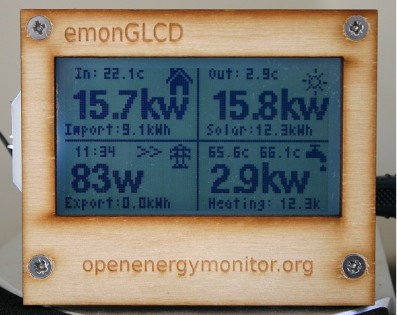

The emonGLCD hardware platform is an excellent low cost bit of kit that is ideal for fiddling with and I am sure that many users have made various changes and improvements. The idea behind this thread is to provide a platform for those ideas to be shared and discussed.
Existing users will probably all consider fixing the software lock-up problem as the most important enhancement but that is covered in another thread.
To get the ball rolling I shall identify the changes that I have made below.
1. The obvious change that can be seen in the photo is that the LED’s are on the ‘wrong’ side of the PCB. This allows the light to shine through translucent apertures in the front panel rather than projecting onto the ceiling. The drive waveform to the red and green is constant in amplitude but the ratio of red and green is varied. The two LED colours can then mix and the relationship between generation and use is represented by colour. The light intensity remains constant - previously this was a variable
The result looks like this:
HIGH IMPORT................................................BALANCE.................................................HIGH GENERATION
RED Orange Amber Yellow Green
There are 256 colour steps between Red and Green
2. When the energy bucket overflows this indicates that power is being wasted to the grid therefore the LED's flash which indicates that it's time to switch on the dishwasher or washing machine
3. The temperature quadrant on the display is now used to show power diverted to the solar dump. This is integrated over several emonTx transmissions.
4. The grid quadrant on the GLCD display now includes Voltage and Frequency measaurement sent from the emonTx
The frequency indication shows excellent alignment with the readings shown here.
Who has more?
Re: emonGLCD modifications and improvements
Here are mine (all in the Fusion sketch):
Re: emonGLCD modifications and improvements
Some good ideas from you both there. Good to see the frequency result being used Brian.
I'm using the bottom right quadrant to display diverted power like Brian, but with the temperature of my 2 hot water cylinders in small text at the top. Unfortunately I don't seem to be able to attach any pictures at the moment though.
edited to add photo...

The "Heating" value is power being diverted to the under-floor heating as both immersions are fully on.
Re: emonGLCD modifications and improvements
I have been using the bottom right to display ambient temperature (like every one else) unless I'm diverting to the Immersion, at which point I swap the display to show power diverted and the immersion tank temperature. Last night I implemented a change where I now display the external temperature in the bottom right, unless the immersion is on. I'm getting the temperature from my PWS, passing to emonBase via http, and then onto the display. I will probably implement using one of the buttons to change the lower right display.
Like most my leds are red export, green import and orange for immersion. But I also have the leds pulse slowly if the water temperature is too low around 5pm - that way during the summer I can fire up the boiler if I don't have enough hot water.
Lloyd
Re: emonGLCD modifications and improvements
I've edited my earlier post as I can now upload pictures again.
Lloyd - I like your idea of only displaying diverted power when diversion is happening, makes a lot of sense.
Re: emonGLCD modifications and improvements
At the risk of jumping on the temperature bandwagon, I forgot to mention that my sketch also displays temperature : down the right and edge I have top and bottom tank temperature measurements and then outside temperature and finally, and almost useless , the temperature on the GLCD. As with the sensors and LEDs, I really should have put the temperature monitor on flying leads as well.